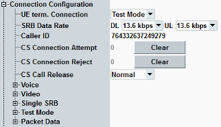

Connection Configuration
The "Connection Configuration" section selects a connection type for UE terminated connections and defines parameters for the supported connection types (applicable to mobile originated and mobile terminated connections).

Connection settings
For parameter descriptions, refer to the subsections.
Contents